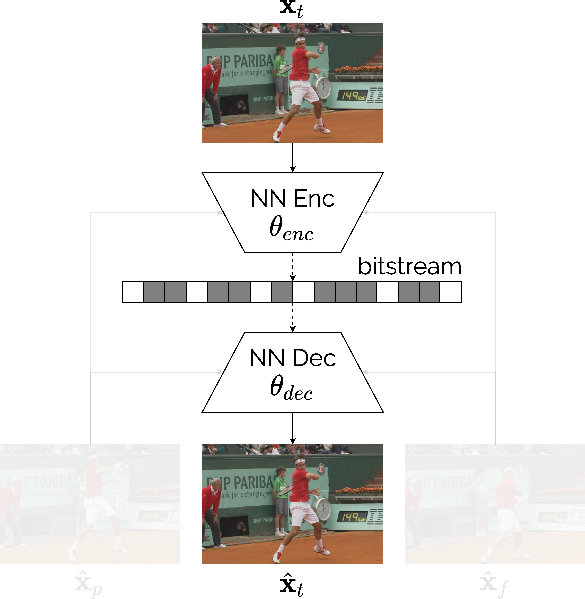
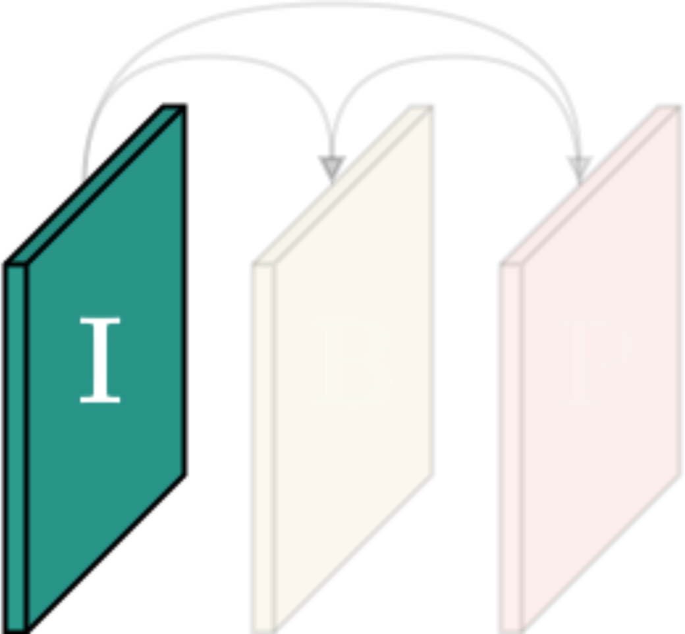
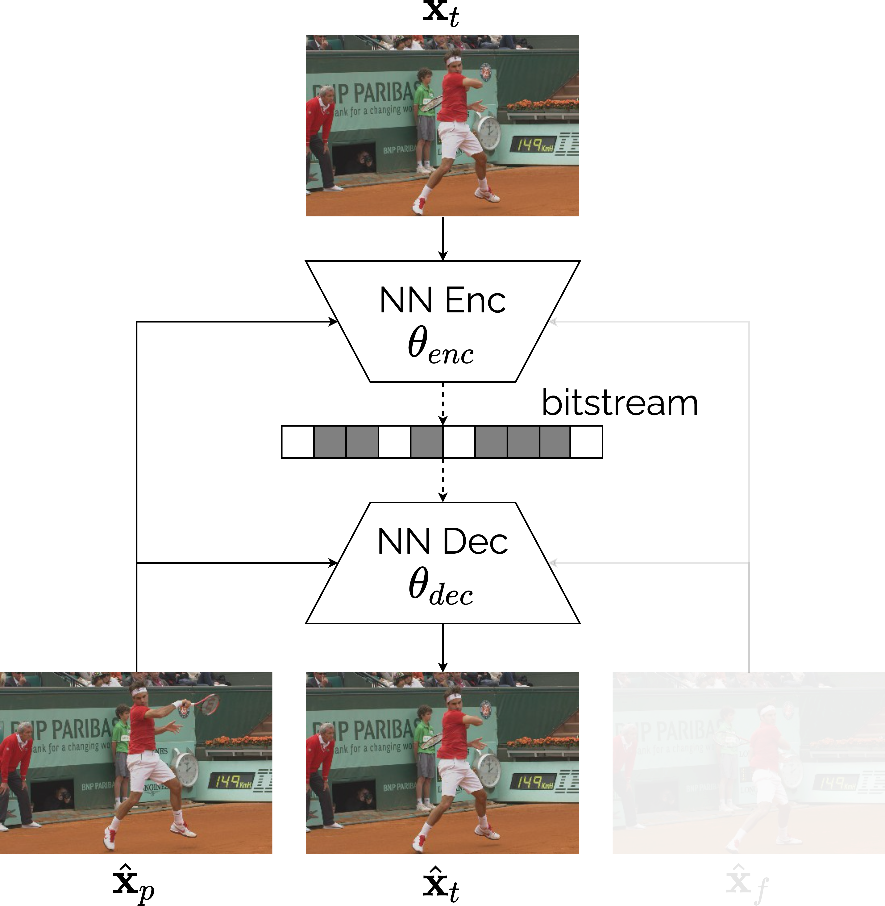
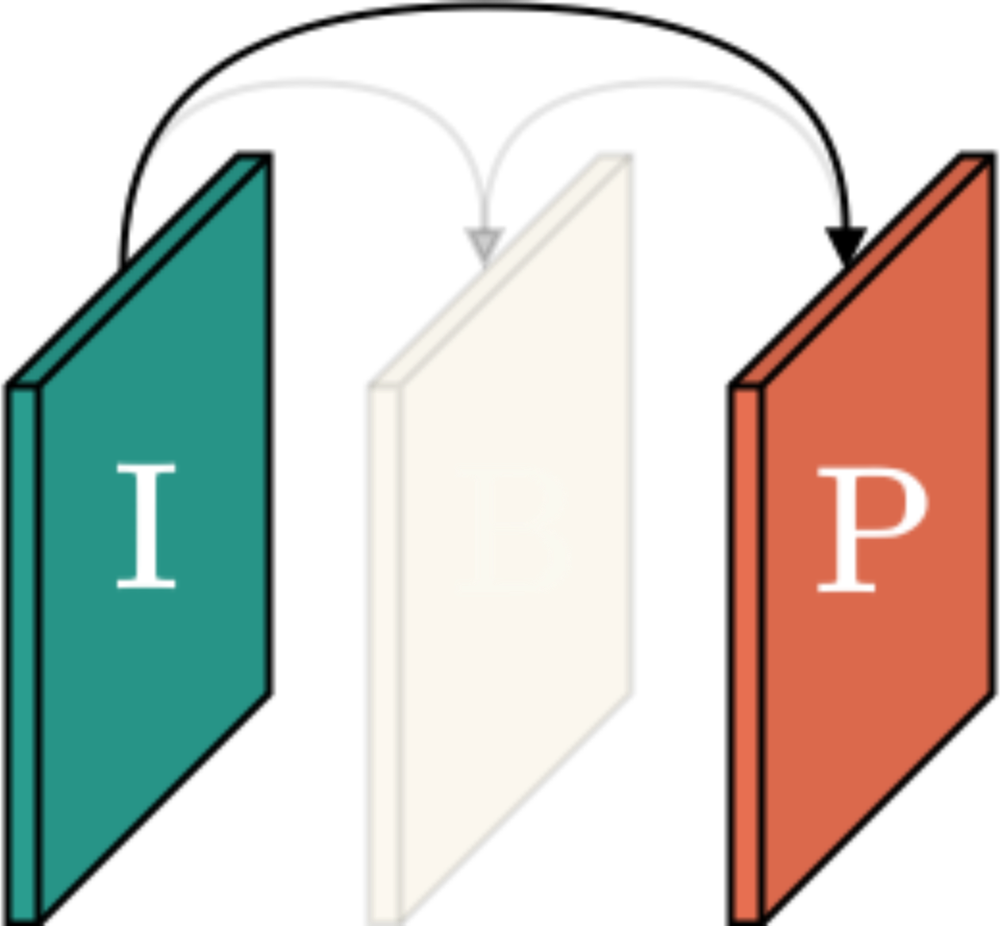
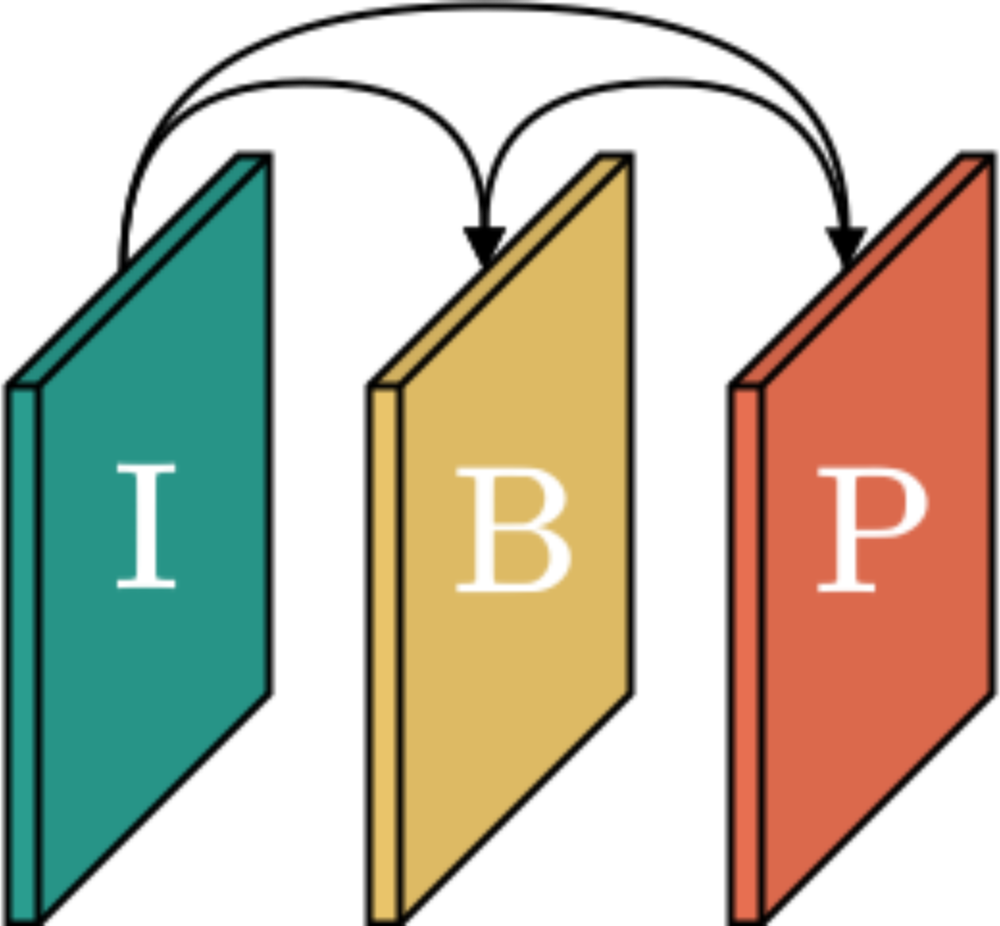
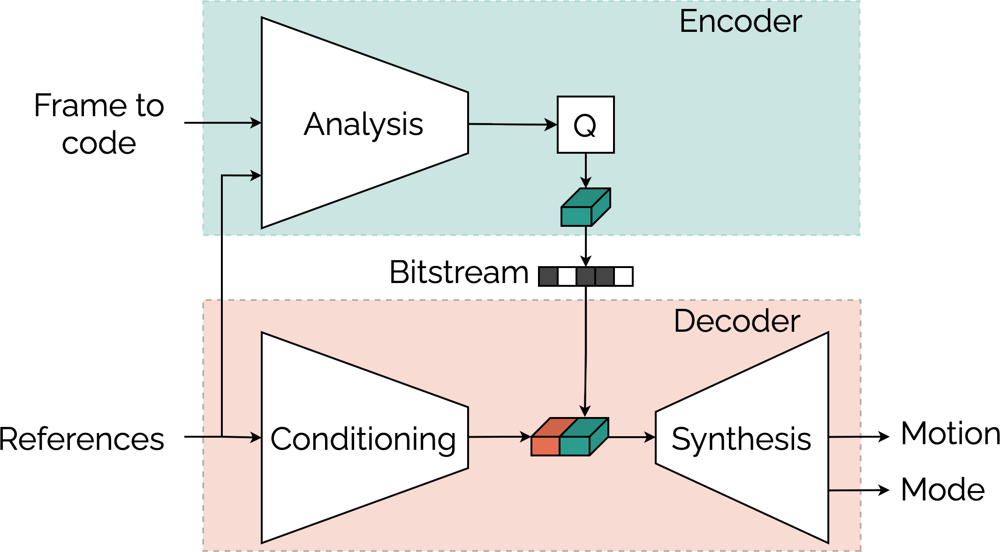
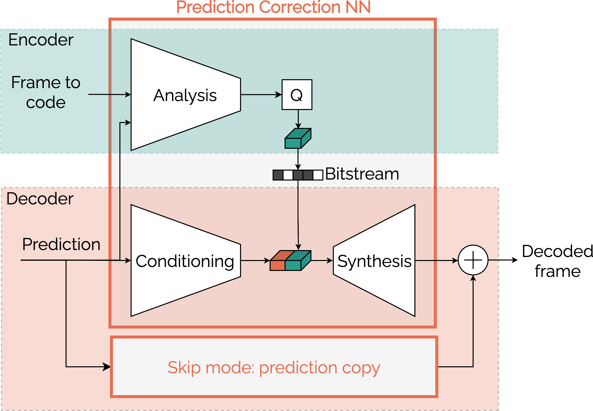
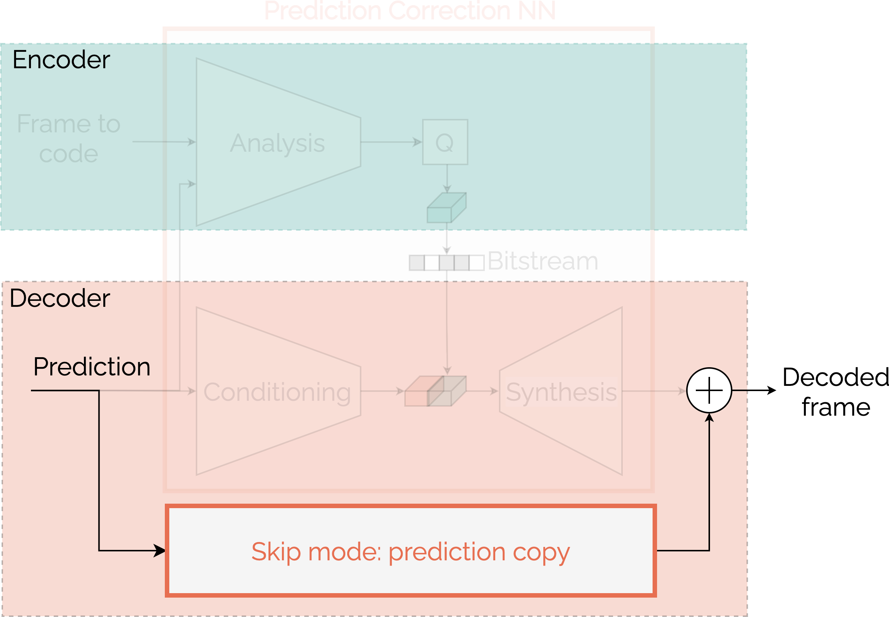
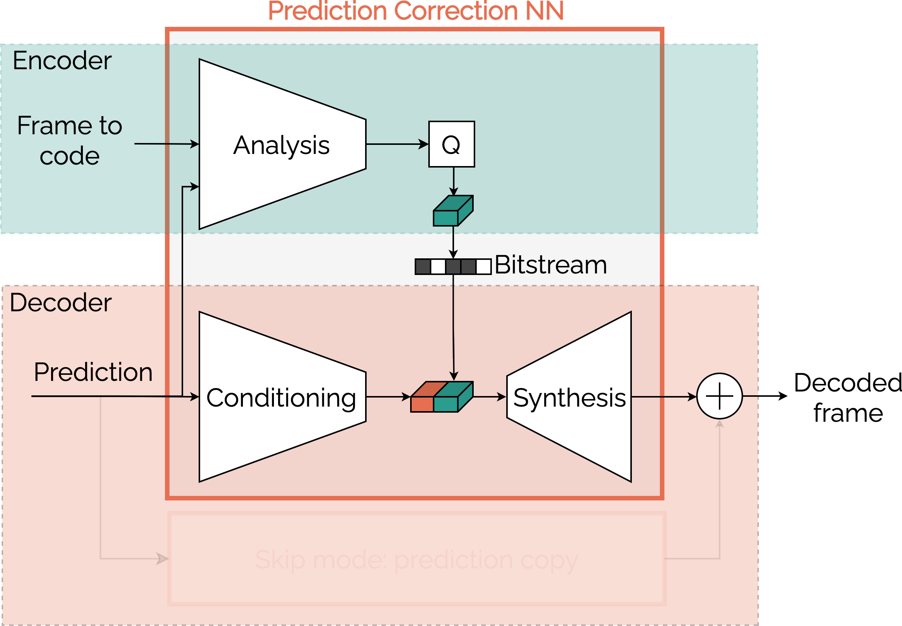
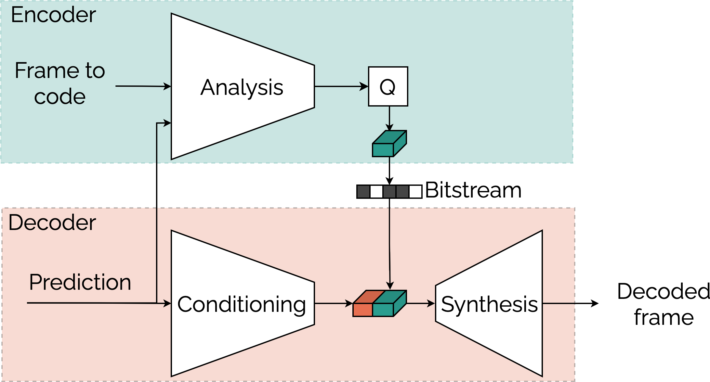

AIVC
An open-source learned video coder
AIVC Seminar, November 25, 2021
Brief Introduction
- PhD: Design of learned video coding schemes
- Our proposed codec
- Entirely learning-based
- Perform the usual coding configs (AI, LDP, RA)
- On par with HEVC (HM) @ various rate targets
- Talk in two parts
- Codec features from an user's point of view
- Key elements for compression performance
PART 1:
CODEC FEATURES
Same NNs for all frame types






- Identical neural networks for I, P and B frames
- Frames arranged as desired to set:
- Coding configuration (AI, LDP, RA)
- Intra frame period
- GOP size
Setting the coding configuration
python aivc.py \
-i raw_HxW.yuv \ # Raw YUV video
--bitstream_out bit.bin \ # Bitstream
-o decoded_HxW.yuv \ # Decoded YUV video
--coding_config RA \ # AI, LDP or RA
--intra_period 16 \ # For RA or LDP
--gop_size 16 # For RA only
python aivc.py \
-i raw_HxW.yuv \ # Raw YUV video
--bitstream_out bit.bin \ # Bitstream
-o decoded_HxW.yuv \ # Decoded YUV video
--coding_config RA \ # AI, LDP or RA
--intra_period 16 \ # For RA or LDP
--gop_size 8 # For RA only
python aivc.py \
-i raw_HxW.yuv \ # Raw YUV video
--bitstream_out bit.bin \ # Bitstream
-o decoded_HxW.yuv \ # Decoded YUV video
--coding_config RA \ # AI, LDP or RA
--intra_period 8 \ # For RA or LDP
--gop_size 8 # For RA only
python aivc.py \
-i raw_HxW.yuv \ # Raw YUV video
--bitstream_out bit.bin \ # Bitstream
-o decoded_HxW.yuv \ # Decoded YUV video
--coding_config LDP \ # AI, LDP or RA
--intra_period 8 # For RA or LDP
# --gop_size 8 # For RA only
python aivc.py \
-i raw_HxW.yuv \ # Raw YUV video
--bitstream_out bit.bin \ # Bitstream
-o decoded_HxW.yuv \ # Decoded YUV video
--coding_config AI \ # AI, LDP or RA
# --intra_period 8 # For RA or LDP
# --gop_size 8 # For RA only
Setting the rate target
- One encoder-decoder pair for a single rate
- 7 encoder-decoder pairs, rates up to a a few Mbit/s
- Identical architecture
- Different param $\boldsymbol{\theta}_i$ learnt through the rate constraint $\lambda_i$ \[\begin{equation} \boldsymbol{\theta}_i = \mathrm{arg min}\ D + \lambda_i R \end{equation} \]
python aivc.py \
-i raw_HxW.yuv \ # Raw YUV video
--bitstream_out bit.bin \ # Bitstream
-o decoded_HxW.yuv \ # Decoded YUV video
--coding_config RA \ # AI, LDP or RA
--intra_period 16 \ # For RA or LDP
--gop_size 16 \ # For RA only
--model ms_ssim-2021cc-2 # Select model
Competitive performance
- On par or better than HEVC (HM 16.20)
- For all coding configurations
- Across a wide range of rate targets
- Best end-to-end learned codec @ CLIC 21
- Compress HD video sequences @ 1 Mbit/s
- Get the highest quality (MS-SSIM)
PART 2:
KEY ELEMENTS FOR CODING PERFORMANCE
System overview
System overview
- Usual auto-encoder based video coder...
- Estimate and send motion info
- Temporal prediction through motion compensation
- Send correction to the prediction
System overview
- Usual auto-encoder based video coder...
- Estimate and send motion info
- Temporal prediction through motion compensation
- Send correction to the prediction
- ... With a few particularities
- Decoder-side inference of motion info
- Enhanced transmission of the prediction correction
- Skip mode: supplementary coding mode
Decoder-side motion inference
- Frame to code and references as inputs
- Two transforms extract motion info
- Conditioning captures info available at the decoder
- Analysis sends info missing at the decoder
- Both info are combined through the synthesis
Frame to code
Motion info
Decoder-side motion inference
Motion info
Motion info Conditioning
Motion info Conditioning Analysis
- Conditioning transform allows
- Decoder-side motion inference
- Spare rate and get more precise motion info
- Particularly efficient for lower rates
Exploit the prediction
- Two ways of leveraging the prediction
Exploit the prediction
- Two ways of leveraging the prediction
- Skip mode: copy prediction
Exploit the prediction
- Two ways of leveraging the prediction
- Skip mode: copy prediction
- Sending correction with a NN
- More content adaptation
Sending the prediction correction
- Conditional coding to send the correction
- Frame to code and prediction mixed in a latent domain
- Richer mixture than the usual residual coding
- Spare 30% rate vs. residual coding
Skip mode
- Skip mode is an additional coding mode
- Copy areas of the prediction well predicted enough
- Selected by the motion network
- Offer better content adaptation: -10% rate
Skip mode
Frame to code
Frame to code Motion info
Frame to code Motion info Motion info 2
Frame to code Prediction
Prediction
Prediction Coding mode
Prediction Coding mode Skip mode
Prediction Coding mode Correction
CONCLUSION
Conclusion
- The proposed codec is
- Built only with neural networks
- Able to achieve the usual coding configurations
- competitive with HEVC
- Feel free to try it!
- More info in my thesis manuscript